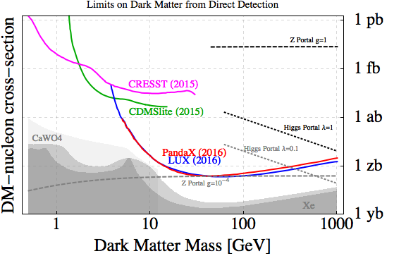

兩年前，我在《中國錦屏地下實驗室》一文中談到上海交大的PandaX以及北京清華的類似新計劃。其實這種直接探測暗物質與實驗室裏的介質通過弱作用力反應的實驗，在國際上有好幾個，是過去十年非常熱門的高能物理實驗方向之一。在技術上，它們與以往的質子衰變（SU5統一場論預言質子會以很小的機率衰變，後來被實驗證明是錯的）以及一系列測量Neutrino（中微子或微中子，有很小的未知質量，會在三個種類之間自行嬗變；中國有大亞灣實驗仍在進行之中）的實驗極爲相似，都是選擇地底深處，以減少宇宙綫所引起的假信號，儲存了大量同位素穩定（亦即沒有會自發衰變的同位素）的介質，藉著觀察其核子衰變來檢驗是否有理論預測的新過程。
PandaX（Particle AND Astrophysical Xenon detector）選用的介質是Xenon，這是很昂貴但是很理想的介質，美國最先進的實驗LUX（Large Underground Xenon experiment）也選用了它。當然LUX在1.5公里深的South Dakota廢礦裏用了370公斤的Xenon，那麽晚了三四年開始的PandaX要後來居上，自然選擇了在2.4公里深的雅礱江錦屏水電站引水隧洞用500公斤的Xenon來做實驗。2016年七月21日，LUX宣佈實驗完成，公佈了完整的結果；由於電子系統的進步和各項細節的順利執行，LUX所探測的精度比原定高出了四倍（亦即超過半個數量級），但是仍然是連一個暗物質反應都沒有觀察到。PandaX還衹做到一半，但是已經有了精度相似的數據，於是匆忙在同一天晚上開了記者會，同樣宣佈了沒有觀察到暗物質的結果（參見http://www.guancha.cn/Science/2016_07_23_368600.shtml ）。

這是LUX公佈的總結果。國際上幾個類似的實驗，從上到下，逐步否決了超對稱暗物質的參數空間。最新的LUX2016和PandaX2016，已經又比LHC否決的範圍超出一個數量級以上了。其實就算不假設超對稱，只假設暗物質參加弱作用力，作用强度也已經必須小於10^-4，前景十分黯淡，完全印證了我一直强調的，暗物質參加弱作用力是個天外飛來的假設，除了超對稱之外，并沒有理論的基礎，而超對稱本身卻極不靠譜。
既然LUX已經做完，而PandaX還沒有得到所有原定的數據，那麽物理界是否還在等後者完成實驗呢？很不幸的，不但PandaX在後段實驗中觀測到暗物質的機率微乎其微，高能物理界已經接受了這個事實，基本上沒人在乎PandaX了。這是因爲如前所述，LUX的測量精度比原定高了四倍，把理論預測的可能參數空間基本完全涵蓋，而這剛好也是PandaX真正計劃要搜索的部分。PandaX的測量精度還有餘量，但是已經沒有理論上的基礎，所以沒有實際上的意義。
不是做高能物理爲生的讀者或許會問，説不定理論是錯的，那麽PandaX反而會有機會做出真正重要的發現，不是嗎？其實這些實驗所依據的“理論”，正是我在一系列前文（參見《高能物理的絕唱》）中提過的超對稱，不但在過去30年的高能對撞機實驗裏被完全否定，這次LUX和PandaX的結果把它又多否定了一個數量級以上。換句話說，這些新實驗結果否定的不是暗物質的存在性，而是暗物質是超對稱粒子的可能性。所以“理論”的確是錯的，可惜這對PandaX沒有幫助。
這是因爲即使躲到地底深處，并且選用昂貴而穩定的介質，仍然會有很多雜訊，例如Neutrino和地殼裏放射性元素的自然衰變。PandaX在目前爲止的實驗過程中所觀察到的衰變事件總數超過3000萬，而且各式各樣的粒子都有可能，而實驗室所能容納的探測器種類十分有限（否則就至少等同重建LHC的實驗腔，亦即《高能物理的絕唱之一》所提到的人類世上最複雜的機器，而且反應區大了十幾個數量級），不可能對每一個衰變都追根究底，找出它的緣由。所以這些實驗必須根據理論預測的特徵，對衰變事件進行針對性的探測器安排，并在軟體方面做高速篩選。既然理論是錯的，統計上搜集的樣品再多也沒有意義。
當然LUX和PandaX這一系列實驗，并不是超對稱這個歪論的唯一受害者。高能物理實驗一向都必須針對某個特別的理論而設計，LHC本身也是針對超對稱而建造的（Higgs衹是安慰獎），所以超弦這幫騙子浪費的人類資源，至少已經以百億美元計了。現在衹有Higgs證明是現實存在的粒子，他們（如丘成桐）居然有臉說秦皇島的新對撞機也是爲Higgs而設計。其實它的尺寸比研究Higgs所需的大了超過10倍，費用超過20倍，連類型都不對:它是環狀的連續對撞機，而不是直綫對撞機。前者有較高的亮度（Luminosity），所以適合搜索未知的參數空間，而後者在能量相當的前提下，便宜至少一半以上，所以適合精密測量已知的粒子。這樣的一個針對Higgs的直綫對撞機，早已在緊鑼密鼓地籌備之中，它就是ILC（International Linear Collider，國際直綫對撞機），可能會落戶在日本（美國人自己似乎沒什麽興趣，大概因爲ILC的性價比雖然不像秦皇島對撞機一樣等於0，但是也衹稍大於0；歐洲人則已在LHC上學過一次乖）。
那爲什麽由美國人主導的高能物理界不讓中國主辦ILC呢？除了不像秦皇島的新對撞機，ILC至少有一點實際物理意義之外，我認爲還有一個理由，就是直綫對撞機的技術和環狀對撞機不同：後者降低能量和尺寸之後，可以作爲同步輻射的光源，在固態物理和生物物理上有很大的用途，但是這是老技術，中國早就有了（臺灣和上海在過去兩年先後啓用了世界先進的同步輻射光源）；而前者在降低能量和尺寸之後，就成爲自由電子Laser，這不但是最佳的硬X光（Hard X-Ray，亦即波長很短的X光，同步輻射是軟X光）源，在研究化學反應（因爲它脈衝極短、解析度極高，不止可以看見個別原子，甚至可以看見個別電子從一個原子跳到另一個原子的過程）上有不可替代的功能，在軍事上也有發展成太空武器的潛力，而中國在這方面還是一片空白。中國高能物理界的帶路黨徒，不可能不知道前述的道理，所以他們放著ILC不爭取，而衹知附和丘成桐公然撒謊，想忽悠出貴上20倍而且完全無用的秦皇島對撞機，就特別可惡了。
LHC預定在下個月，公佈針對我在《高能物理的絕唱之二》裏討論過的750GeV“統計鼓包”所做的新實驗的結果。我仍然認爲它是真實粒子的可能性在1%以下，立此存證。届時會再寫一篇詳細的分析，爲高能物理的死亡，蓋棺論定。
Shiftbear
2016-07-24 00:00
五月初参加一个国际会议，碰到一个在CERN工作的欧洲同业。他是国际线型对撞机(ILC, International Linear Collider)加速器理论设计工作主持人之一。这个数十亿美元的国际科研计划目前是决定盖在日本。美国早就把它当成烫手山芋，除了表面敷衍以外实际拨款几乎等于零。负责在美国做ILC设计研究的Stanford Linear Accelerator Center (SLAC)这方面的很多研究人员目前根本不知道工作是否还保得住。可是与此同时SLAC在应用研究上得到了美国政府超量拨款，新的加速器光源一个接着一个建造。这就是当前精打细算，务实的美国科研重点。
美國人在自由電子laser上已經是世界領先，不須藉這個50-60億美元的計劃來發展新技術，所以才會找上日本這個冤大頭。
Shiftbear
2016-07-24 00:00
关于New Yorker 的文章:
我想有兩個被采訪的次要人物說他們的看法被曲解了。但是文章的主軸是沒有問題的，因爲丘的學生的論文早就沒人理了，Perelman卻永遠留名青史。
Shiftbear
2016-07-25 00:00
同意ILC的技术含量相对于circular collider而言确实是对中国比较有价值的。
但是絕對不值50億美金，更值不上1000億美金。而那些超弦騙子是希望中國拿出1000億美元來，卻什麽也得不到。
Shiftbear
2016-07-25 00:00
详情我必须再进一步补充记忆里的漏洞。大概十到二十年前（？）当台湾还可以算是一个凯子，而欧美高能物理实验经费开始力不从心的时候，记得李政道等人曾代表他们强力游说台湾当局资助一些大型国际项目。不记得是否包括LHC，可是好像非常成功。我个人是完全支持基础研究的。只是科学研究课题应该以本身科学价值为第一标准，其次是总体科研政策的配合度。以上的例子恐怕违反这个原则。一方在钓凯子，另一方没有科学判断和整体规划的能力，陷入诺贝尔迷信，「台湾之光」，「走出去」的偏执，和满足一些career ambition的误区。完全扭曲了科学研究的逻辑。
同意。
guduqiubai
2016-07-27 00:00
摩尔定律五年内将失效,半导体在10奈米以下将不具有经济性了。台积电的7奈米将会是半导体芯片的尽头
如果半導體製程停滯在7或5奈米，將會大幅幫助後起之秀追趕上來。Intel和Samsung倒不見得日子就好過。
guduqiubai
2016-08-04 00:00
1:在2013年，美国不得不向中国购买了一台50吨级的振动台。因为美国自己确实造不出来，俄罗斯用的也是中国造的20吨级振动台，所以只能向中国购买。而且购买的时候，
研究工具有了，前景看好，但是那衹是箭身。美國在液氫火箭引擎的功力，還是獨步全球的。
guduqiubai
2016-08-04 00:00
该型火箭是一种 双燃烧室高压补燃原理液氧煤油发动 机，相比之下俄罗斯此前表示向我国 推销的RD-180火箭推力为400吨。
大陸的煤油火箭技術是從20多年前引進RD-180的小弟RD-120，然後逆向工程而得。老實説，大陸的技術水準還比RD-180差半截，不過至少做出一個原型機來，和俄方談判交涉引進RD-180，底氣就飽滿得多。
observer
2016-08-05 00:00
王先生能评价一下胡正明先生的最近在半导体产业相关的发言么？为什么在很多人都极端看衰半导体制程进一步微细化的情况下，胡先生在南京的国际半导体最新技术与应用研讨会上依旧做出了：半导体的发展并没有进入尾声，它还有一百年的荣景的产业前景判断呢？
生化真有前途，衹是一窩蜂供過於求，再加上大陸高校的教授只關心發論文，在專業上脫離現實，所以才造成學生的囧境。
passingby
2016-08-06 00:00
我的看法是，半导体產业面的确还有得搞，一百年后可能还是用这些东西。但是，以硅为基底的半导体的确不久即遇到天限，若是没有新材料加入，那么半导体厂即将和制鞋厂类似，员工分红的可能性基本不存在。
我對半導體悲觀些，20年内就會有明顯的撞墻。